<!-- Part 5: Case Study -->
<section>
    <h2>第五部分：实战案例</h2>
    <h3>构建反馈循环，利用大模型自动进行算法优化</h3>
</section>

<section>
    <h3>场景背景：Excel 文件批量验证场景</h3>
    
</section>

<section>
    <h3>Excel 文件处理的现实挑战</h3>
    
</section>

<section>
    <h3>核心思路：构建一个自我优化的反馈循环系统</h3>
    
</section>

<section>
    <h3>LLM 驱动的算法优化实施步骤</h3>
    
</section>

<section>
    <h3>优化过程中的关键发现</h3>
    <h4>陷阱与收获的对比分析</h4>
    
</section>


<section>
    <h3>成功的关键因素</h3>
    <h4>三个核心要素形成相互促进的反馈循环</h4>
    
    <p style="margin-top: 20px;">
        <strong>参考资料</strong>：<br>
        Google DeepMind《AlphaEvolve: A Gemini-powered coding agent for designing advanced algorithms》
    </p>
</section>

